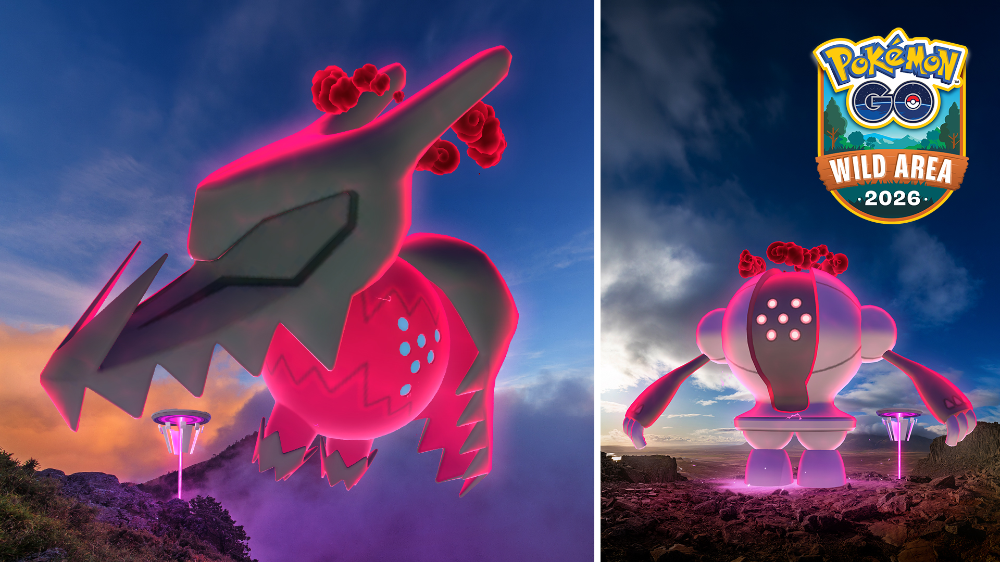
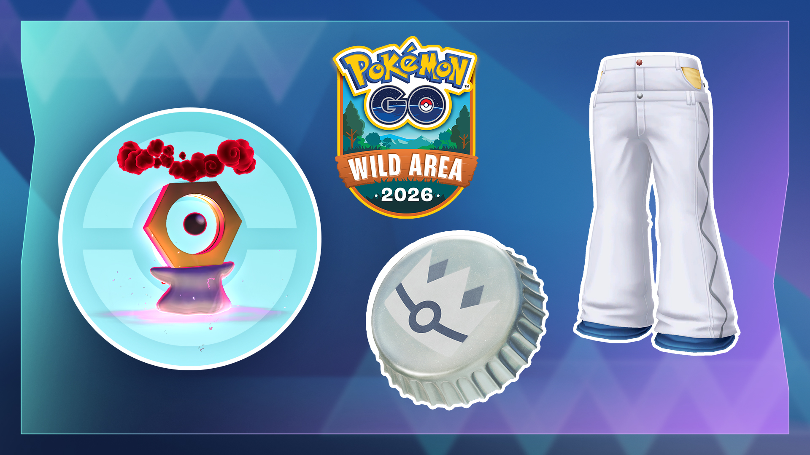
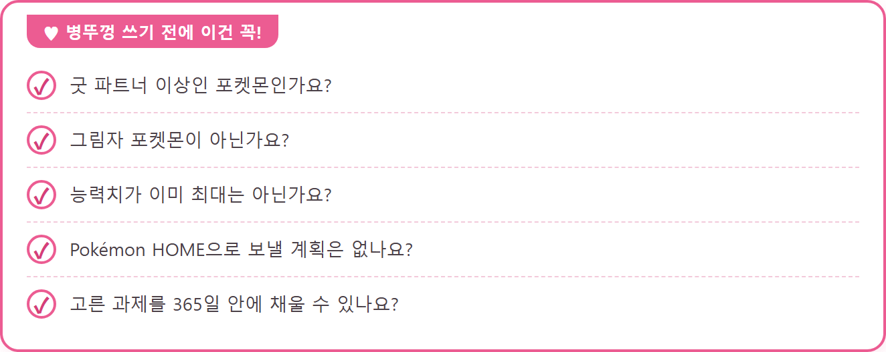
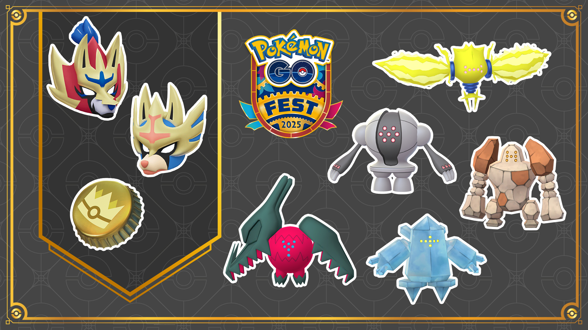

포켓몬 GO 은색병뚜껑 대단한 특훈, HP 공격 방어 뭘 고를까
와일드 위크 GO패스 디럭스를 끝까지 채우면 은색병뚜껑이라는 일회용 도구가 기다리고 있는데요, 이걸 어떤 포켓몬의 어떤 능력치에 쓸지가 이번 이벤트에서 가장 오래 고민될 부분일 것 같아서 오늘은 그 한 가지만 콕 집어서 풀어볼게요. 와일드 위크는 한국시간 11월 9일 월요일 오전 10시부터 13일 금요일 오후 8시까지이고, 아직 시작 전이라 앱에서 열어 본 건 아니고, 공식 발표 기준으로 정리해 볼게요.

2026 와일드 위크 공식 이벤트 이미지예요.
이미지 출처: Pokémon GO 공식 발표 · 네이버 본문엔 받아서 재업로드 권장
은색병뚜껑은 어떤 도구인가요?
은색병뚜껑은 GO패스 디럭스의 와일드 위크를 완료하면 받는 일회용 도구로, 굿 파트너 이상인 포켓몬에 써서 대단한 특훈을 시작하게 해 줘요. 쓰고 나면 공격·방어·HP 가운데 하나를 골라 그 능력치의 과제를 채우고, 끝내면 고른 능력치 1개가 극대화돼요. 병뚜껑 하나는 포켓몬 1마리에만 쓸 수 있어서, 받는 것보다 어디에 쓰느냐가 훨씬 중요한 도구죠. 디럭스 가격과 보상 차이는 따로 정리해 둔 글이 있어서, 여기서는 병뚜껑 하나만 파고들게요.
그리고 병뚜껑은 받은 시점과 상관없이 11월 22일 일요일 23시 59분에 만료돼요. 아래 이미지에서 가운데 아래쪽에 놓인 은빛 병뚜껑이 바로 그 도구랍니다.

은빛 왕관 무늬가 새겨진 병뚜껑이 은색병뚜껑이에요.
이미지 출처: Pokémon GO 공식 발표 · 네이버 본문엔 받아서 재업로드 권장
아무 포켓몬에나 쓸 수 있나요?
굿 파트너 이상이어야 하고, 그림자 포켓몬과 능력치가 이미 최대인 포켓몬은 쓸 수 없어요. 병뚜껑을 받고 나서 후보를 찾으면 늦으니 조건부터 짚어 볼게요.
- 굿 파트너 미만인 포켓몬은 쓸 수 없어요. 파트너 포켓몬으로 같이 다니며 올리는 단계라서 시간이 걸려요.
- 그림자 포켓몬은 대상이 아니에요. 정화하기 전이라면 후보에서 빼야 해요.
- 능력치가 이미 최대인 포켓몬은 쓸 수 없는데요, 더 올릴 게 없으니 쓸 이유도 없죠.
제가 보기엔 11월 9일 전에 후보 두세 마리를 정해 파트너로 데리고 다니며 굿 파트너까지 올려 두는 것이 제일 손이 덜 가는 순서예요. 병뚜껑을 쓸 날 후보가 굿 파트너 미만이라서 못 쓰는 일만 피해도 절반은 성공이거든요.
HP 공격 방어, 뭘 고르면 좋을까요?
어느 쪽이 더 유리하다는 기준은 따로 없어서, 쓸 용도와 내가 과제를 채우기 쉬운 활동을 같이 보고 고르는 게 안전해요. 먼저 능력치마다 어떤 과제가 붙는지부터 표로 놓을게요.
| 고르는 능력치 | 채워야 하는 과제 (2026 공식 안내) |
|---|---|
| 공격 | 해당 포켓몬과 배틀 |
| 방어 | 파트너로 설정하고 함께 플레이 |
| HP | 파트너로 설정하고 포켓스톱 돌리기, 파트너 포켓몬의 사탕 발견 등 |
표를 보면 방어와 HP는 둘 다 파트너로 설정해야 채워지는 과제이고, 공격만 그 포켓몬을 직접 배틀에 내보내는 과제라서 결이 갈려요. 평소 파트너를 켜 두고 다니는 분은 방어·HP가 몸에 붙고, 배틀을 자주 도는 분은 공격이 맞는 셈이죠.
참고로 2025년 금색병뚜껑 안내에서는 공격 과제가 파트너로 지정해 함께 배틀하는 것으로 적혀 있었고, 올해 안내에는 해당 포켓몬과 배틀이라고만 적혀 있어요. 작년이랑 표기가 조금 달라서, 표에는 올해 안내 문구 그대로 적었어요.
· 능력치별 과제 횟수 (배틀 몇 번, 포켓스톱 몇 번 등)
· 과제 도중 파트너를 바꿔도 되는지
확인 위치: 11월 9일 이후 병뚜껑을 쓴 뒤 포켓몬 정보 화면의 대단한 특훈 과제 · 확인되면 아래에 채워주세요.
몇 번을 채워야 하는지는 이 화면에 나올 거예요.
이럴 땐 이렇게 골라요 — 공식 기준은 아니고 제 생각이에요.
· 레이드나 체육관에서 때리는 쪽으로 쓸 포켓몬이라면 공격이 먼저 떠올라요. 주는 피해와 직결되는 능력치이고 과제도 배틀이라 쓰임새와 활동이 맞아떨어지거든요.
· 맞아 가며 버티는 쪽으로 쓸 포켓몬이라면 방어나 HP를 보세요. 파트너로 두고 평소처럼 플레이하면 채워지는 과제라 배틀 시간이 없는 날에도 진행할 수 있어요.
· 배틀을 거의 안 돌리는 분이라면 HP가 부담이 적어요. 포켓스톱을 돌리는 건 평소 플레이에서 저절로 쌓이니까요.
· 컬렉션 용도라서 딱히 쓸 곳이 없다면 내가 제일 자주 하는 활동에 맞는 과제로 고르면 돼요. 방치하다가 365일을 넘기는 게 제일 아까우니까요~
고른 뒤에 바꿀 수 있는지는 아직 몰라서 신중하게 눌러야 해요.
제 첫 후보는 〔공격 / 방어 / HP〕 쪽 과제를 먼저 채워 볼 포켓몬이에요.
365일 안에 끝내야 하고, 되돌릴 수 없다던데요?
병뚜껑을 쓴 날부터 365일 안에 과제를 완료해야 하고, 완료한 포켓몬은 Pokémon HOME으로 보낼 수 없다고 해요. HOME으로 옮길 계획이 있는 포켓몬이라면 후보에서 빼는 쪽이 마음 편하겠네요. 이벤트 날짜는 한국시간으로 이렇게 이어져요.
- 11월 9일(월) 오전 10시 ~ 11월 15일(일) 오후 6시: 이벤트 보너스와 GO패스 기간이에요. GO패스 완료는 15일 18시까지예요.
- 11월 17일(화) 23시 59분: GO패스 리워드를 받을 수 있는 마지막 시각이에요.
- 11월 22일(일) 23시 59분: 은색병뚜껑이 만료돼요.
날짜 순서로 보면 15일에 GO패스를 끝내고, 17일 전에 리워드를 받고, 22일 전에 병뚜껑을 쓰는 흐름이에요. 와일드 위크 본 행사는 13일 금요일 오후 8시에 끝나지만, GO패스 기간은 주말인 15일 일요일 오후 6시까지 이어져요. 마무리할 시간이 이틀쯤 더 있는데요, 리워드 수령 마감이 17일이라 그날이 더 급해요. 병뚜껑을 쓸 시간은 한참 남아 있고요. 그래서 쓸 포켓몬은 미리 정해 두고 받자마자 바로 쓰는 편이 좋겠어요.
한 가지 더, 병뚜껑을 쓰는 순간 그 포켓몬은 앞으로 365일 동안 과제를 채워 나갈 대상이 돼요. 한 번 고르면 오래 같이 가니 신중하게 정하세요.

다섯 가지가 모두 통과하는 포켓몬이 병뚜껑 후보예요.
자주 묻는 질문
Q. 2025년 금색병뚜껑이랑 같은 건가요?
2025년에도 금색병뚜껑으로 같은 제도가 있었고, 굿 파트너 이상이라는 조건이 같다고 해요. 다만 원문 문구는 서로 달라요. 2025년 금색 안내는 “포켓몬의 능력치를 최대로 단련”, 올해 은색 안내는 “선택한 포켓몬(종류 제한 없음)의 능력치 1개(공격, 방어, HP 중 택일)를 극대화”라고 적혀 있네요. 같은 제도인지는 확실하지 않아서 두 문구만 나란히 적어 둘게요.

2025년 GO Fest 때의 금색병뚜껑 이미지예요. 올해 은색병뚜껑과는 다른 해의 자료랍니다.
이미지 출처: Pokémon GO 공식 발표(2025) · 네이버 본문엔 받아서 재업로드 권장
Q. 과제를 하다가 파트너를 바꿔도 되나요?
공식 안내에는 따로 적혀 있지 않아요. 방어와 HP 과제는 그 포켓몬을 파트너로 둬야 진행되니까, 여러 마리를 번갈아 키울 생각이라면 이 점을 염두에 두세요.
Q. 무료 GO패스만 있어도 은색병뚜껑을 받나요?
무료 GO패스 리워드 목록엔 없고, GO패스 디럭스로 업그레이드하면 받는 리워드 목록 첫 줄에 있어요. 그래서 무료로만 가는 분은 받을 수 없는 도구로 보시는 게 맞아요.
은색병뚜껑: 쓰기 전 정리
후보 하나만 먼저 정해 두면 나머지는 쉬워져요. 굿 파트너까지 올려 둔 포켓몬 중에 HOME으로 보낼 계획이 없는 녀석을 고르고, 그 포켓몬을 어떻게 굴릴지에 맞춰 공격·방어·HP를 정하면 되거든요. 그럼 다들 즐겜하시고, 와일드 위크 잘 달려 보세요~
✔ 포켓몬 GO 같이 보기 좋은 내용
· 포켓몬고 무한다이노 맥스배틀 11월 21일 11시~14시 사탕 파밍 동선
· 포켓몬고 와일드 위크 리모트 레이드 30회, 11월 9일 자시안·11월 10일 자마젠타 에너지 챙기는 순서
· 포켓몬고 11월 GO패스 디럭스 가격과 보상 차이, 살까 말까
참고한 곳 (2026.11.03 기준)
· 와일드 위크 2026 공식 발표(Pokémon GO)
· 2025년 금색병뚜껑 GO패스 공식 발표(Pokémon GO)